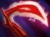

Stifling Dagger
Метает кинжал, замедляя выбранного врага и нанося ему урон.

Керри — позиция 1
На линии стабильно добивай крипов и избегай невыгодных драк. До появления силы для сражений не рискуй без необходимости. В бою ищи уязвимую цель, а не прыгай в центр вражеской команды. Используй мобильность для атаки или отхода и следи за вражеским контролем.
Используй Stifling Dagger, чтобы добивать крипов на расстоянии, когда опасно подходить ближе. Чередуй линии и нейтральные лагеря. Не рассчитывай только на критические удары: до получения силы урон может быть нестабильным.
Метает кинжал, замедляя выбранного врага и нанося ему урон.
Позволяет быстро приблизиться к союзнику или врагу; атаки по цели временно получают бонус к скорости.
Помогает уклоняться от физических атак и скрываться от врагов на карте.
Даёт атакам шанс нанести мощный критический урон.


